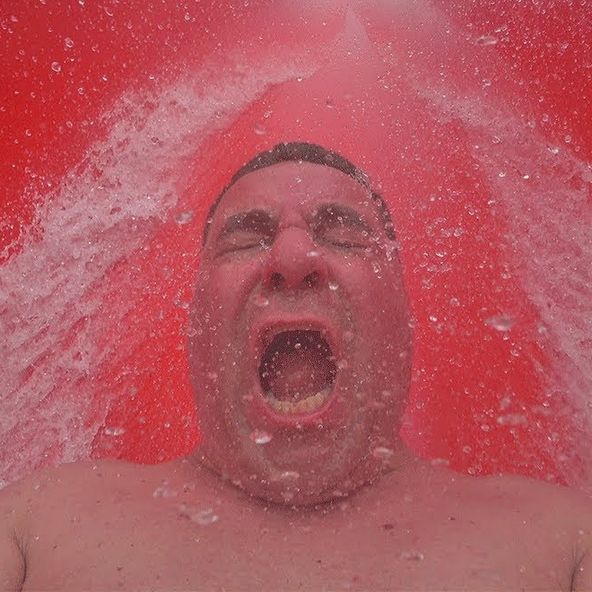

Sobre mim
Eu sou o Tomás Varzim, um fã de informática que se inscreveu na universidade junior
Na Semana do Futuro Engenheiro Informático e está a ser muito divertido
Tenho 16 anos e nasci no dia 30 de Junho de 2008
O meu numero favorito é o 6
E este sou eu:

Hobbies
Os meus hobbies são simples:
| Jogar | Treinar | Comer | Ir à praia |
|---|---|---|---|
| Assassin's Creed🗡️🥷🔪 | Natação🏊♂️ | Prego no prato🥩🍽️ | Matosinhos⛱️ |
| Minecraft🪵🪨⛏️💎 | Treinar braços💪 | Batata Cozida com Salmão🍲 | Leça da palmeira🏝️ |
| Wii party🎮🌟 | Basquete🏀 | Pizza🍕🍕🤌 | Fuzelhas🏖️ |
Contactos
| Whatsapp: 964 001 604 | Instagram: tomas_varzim | discord: ggtomrh |


A minha opinião na Universidade Junior
Este ano foi o meu primeiro ano na universidade júnior e diverti-me bastante e aprendi muito com a ajuda dos monitores incríveis.
Embora tive de acordar cedo, o torneio de Brawl Stars correu bem e o hambúrguer de gato estava uma delícia 😋😋😋.
Os dias foram interessantes e deu para conhecer muitas pessoas inteligentes e interessantes, cada uma com as suas histórias e planos.
Recomendo muito 10/10 👍👍👍
Viva ACM - Tomás Varzim, 2024
Este é o meu video favorito do RicFazeres
Link Suspeito
.